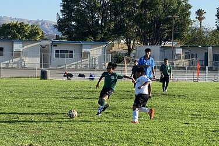
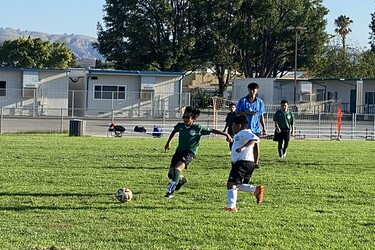
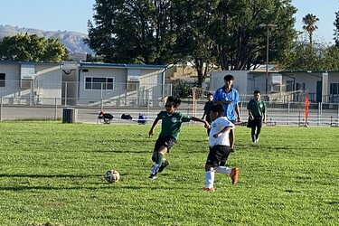
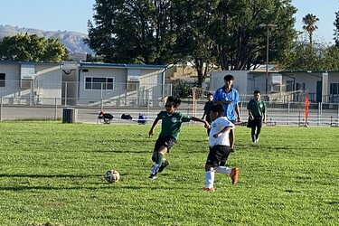

Portfolio
 



I am currently a first year at the University of California, Riverside, majoring in Environmental Engineering. I am interested in the Water Quality field and currently looking for more information regarding the job. My previous job experience included working part time as a Snack Shack Worker, Referee, Pool Monitor and Camp Counselor. As a Snack Shack Worker, I provided a variety of refreshments for the players, parents, and coaches. I greeted customers and took orders in a timely and friendly manner. I kept the area clean and tidy, and answer questions about the menu or anything about the area. For Pool Monitor and Camp Coounselor, I patroled and inspected the facility as assigned and maintenance/ janiotrial issues. I would notify management of all issues and maintain member/guest sign-in sheets as directed. I would communicated and enforce all facility rules in a personable, professional, and consistent manner. As a Referee, I officated youth soccer games and taught players how to learn and play the game of soccer. I would often work with the parents and coaches to give their children the best experience they can. I worked these jobs for more than two years each and have gained valuable skills from working there such as Customer Service, Time Management, Communication, Interpersonal, and Computer Skills, Problem-solving, Attention to detail.
I attended Simi Valley High School and had a consist GPA of 3.80 throughout my four years at high school. I also played four years of Varsity Soccer which taught me leadership skills and communication on the pitch and in real life. Some of the clubs that I participated in is Helping Hands, Mental Awareness, and the Red Cross Club. Some of the activities we would do is volunteer at nonprofit organizations, schedule monthly school/beach clean-up, weekly meetins with a therapist, raise awareness for students' mental health. For Red Cross, we would donate blood, participate in disaster preparedness training, and fundraiser events like blood drives. I also volunteered at my local food banks whenever I had the chance to give back to the community. Doing so fulfills my good deed of the day and hopefully makes someone's day a bit better.
During my years at college, I hope to earn an internship that would help me learn more knowledge about the work space. It would grant me the opportunity to explore my career choice and will offer me a professional work experience where I would be able to do practical work that is related to my career of interest. It would also expose me to new tasks and specific skills that will help me complete these tasks. I would gain experience with technology and projects and make important connections with people working in the field. After college, Internships will prepare me for more job opportunities that may come to me and I should take advantage of them. I wish to look for a job that is willing to be in a mutual business relationship where I would benefit them by working for them and I would benefit from working for them.
• Provide a variety of refreshments for the players, parents, and coaches.
• Greet customers and take orders in a timely and friendly manner.
• Keep the area clean and tidy, and answer questions about the menu or anything about the area.
• Patrol and inspect the facility as assigned and maintenance/janitorial issues.
• Notify management of all issues.
• Maintain member/guest sign-in sheets as directed.
• Communicate and enforce all facility rules in a personable, professional, and consistent manner.
• Officiate youth soccer games and teach the players how to learn and play the game of soccer.
• Work with the parents and coaches to give their children the best experience
